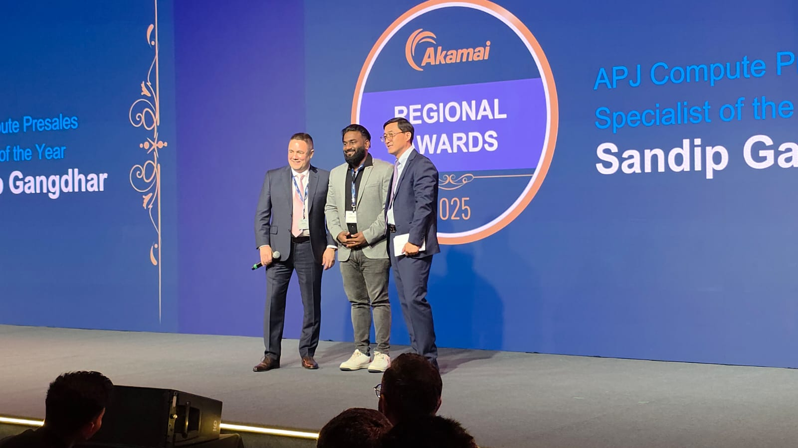

I'm Sandip Gangdhar, a Senior Technical Solutions Architect focused on cloud infrastructure, Kubernetes, networking, platform engineering and automation.
Over the years, I have worked with organizations ranging from startups to large enterprises, helping them design, migrate and operate secure, scalable and highly available cloud platforms. My work spans cloud migrations, Kubernetes platforms, networking architectures, VPN connectivity, private networking, load balancing, observability and automation.
I have been fortunate to receive recognition for customer impact, technical leadership and cloud architecture contributions.
Awarded APJ Compute Pre-Sales Specialist of the Year for customer impact, technical leadership and cloud architecture contributions across the Asia-Pacific region.

Receiving APJ Compute Pre-Sales Specialist of the Year Award
I enjoy building practical solutions that solve real operational challenges. Many of the projects featured on this website originated from customer requirements, field experience and lessons learned while operating production environments.
I regularly write about Kubernetes, distributed systems, networking, cloud architecture and automation.
GitHub: github.com/sandipgangdhar
LinkedIn: linkedin.com/in/sandipgangdhar
Medium: medium.com/@sandip.gangdhar
Website: sandipgangdhar.com